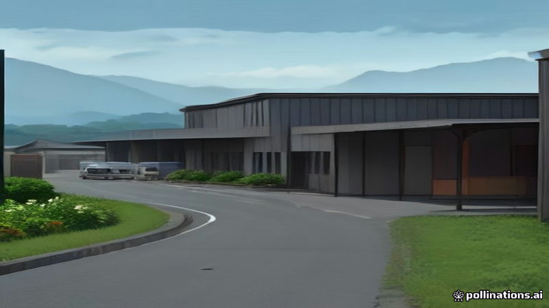

৩৬ বছর পরে নির্জন পথের ফসলি জমি হয়ে উঠেছে বাজার ও প্রশিক্ষণ কেন্দ্র
Prothom Alo · 2026-11-06
AI-generated illustrationপ্রায় তিন দশক ধরে একাকী পথে অবস্থিত ফসলি জমি এখন বাজার, ব্যবসা প্রতিষ্ঠান এবং যুব উন্নয়ন অধিদপ্তরের প্রশিক্ষণ কার্যালয়সহ বিভিন্ন সুবিধা পেয়েছে।
প্রথম আলো অনুসারে, নির্জন পথে দুই পাশে অবস্থিত ফসলি জমি ৩৬ বছর ধরে অপরিবর্তিত ছিল। এই সময়ে সেখানে বাজার, বিভিন্ন ব্যবসা প্রতিষ্ঠান এবং যুব উন্নয়ন অধিদপ্তরের প্রশিক্ষণ কার্যালয় গড়ে উঠেছে।
এছাড়াও সরকারি ও বেসরকারি বিভিন্ন সুবিধা যুক্ত হয়ে এই শান্ত কৃষি এলাকা এখন বাণিজ্যিক ও উন্নয়নমূলক কেন্দ্র হিসেবে রূপান্তরিত হয়েছে।
Read the original reporting at the links above.
English version
Former Farmland Along Isolated Road Turns Into Market and Training Center Over 36 Years
According to Prothom Alo, the stretch of land that lay on both sides of an isolated road remained unused farmland for 36 years. Over that period, the area has been redeveloped with a market, various business establishments and a training office of the Youth Development Department.
The transformation also includes a mix of public and private facilities, marking a shift from a quiet agricultural zone to a hub of commercial and developmental activity.